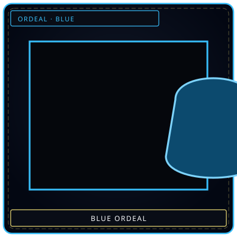
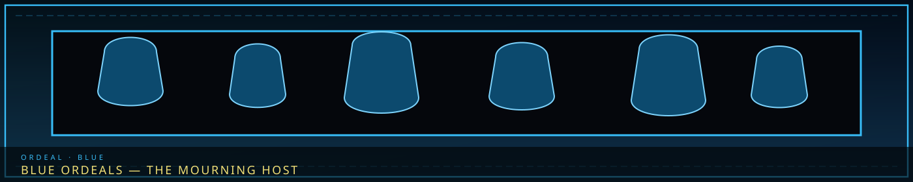
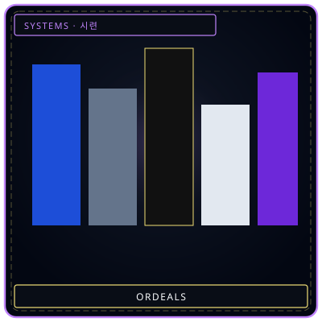
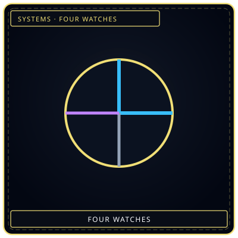

BlueColor of the wave
/// RAPID JUMP:
STATUS: ARCHIVE VERIFIED |
CLEARANCE: LEVEL-4 OVERSIGHT |
PROTOCOL: REVERIE DIRECTORATE
ARTICLE
DISCUSSION
SOURCE
HISTORY
YEAR 4,238 · DAWN OF HOPE
ORDEAL COLOR
Blue Ordeals — The Mourning Host
“Bells without ringers. A host that mourns in formation.”


FrameworkFive × four
WatchWhen it breaksOverview
Blue Ordeals — The Mourning Host are one of five Ordeal colors in the Hand of Change. Color is the Han type. Time (First / Second / Third / Tide Watch) is the severity. This page is the color article — not sixty separate stubs.
Blue Ordeals form from accumulated Lament Han. They weep, wail, and assault the mind. Multiple translucent figures drain Composure and force personnel to relive grief. They move in groups, moaning; their attacks are emotional rather than physical. A room of Blue Ordeals can reduce a team to weeping in seconds. Weak individually; overwhelming in swarms.
| Color | BLUE |
|---|---|
| Han source | Lament (Deep Blue) |
| Theme | Weeping, emotional assault, Composure drain, memory flood |
| Mortality | Ordeals are mortal. They are not Sorrow Entities. They cannot be contained or extracted into M.A.W. |
The four watches
One Ordeal per Time per day. Times escalate. First Watch is a warning that Han is accumulating. Tide Watch is a facility-wide crisis that only Echo-Cores and their top teams engage. An unsuppressed Tide Watch can permanently damage the Hand of Change.
First Watch (minor)
Named Blue First Watch manifestations on file:
- BLUE First Watch — The Leaking Eyes
- BLUE First Watch — The Salt Puddles
- BLUE First Watch — The Weeping Cluster
Knee-high, child-sized translucent figures, blue-tinged, faces hidden in folded hands. They drift, they do not walk. Their weeping is audible across the floor.
Second Watch (moderate)
Named Blue Second Watch manifestations on file:
- BLUE Second Watch — The Brine Rain
- BLUE Second Watch — The Sobbing Wall
- BLUE Second Watch — The Wailing Choir
A localized rain of grief-saturated brine that falls from no visible cloud.
Third Watch (major)
Named Blue Third Watch manifestations on file:
- BLUE Third Watch — The Brine Walkers
- BLUE Third Watch — The Drowned Procession
- BLUE Third Watch — The Hollow Bells
A procession of waterlogged figures trailing black bilge, mouthing silent farewells.
Tide Watch (catastrophic)
Named Blue Tide Watch manifestations on file:
- BLUE Tide Watch — The Drowned World
- BLUE Tide Watch — The Mother Flood
- BLUE Tide Watch — The Ocean of Tears
A single entity — or rather, a moving body of luminous blue liquid Han that fills a corridor from floor to ceiling, advancing slowly like a tide. Within it, thousands of faint faces surface and vanish. It weeps with every voice that has ever grieved in Somnarak.
Suppression
Ordeals cannot be worked. Viderehan / Flerehan / Pugnahan / Ferrehan do not apply. They appear, they wander, they attack, and they must be destroyed. They yield no E.G.O. They do not return from the Weeping.
Hub: Ordeals framework. Time axis: The Four Watches. Sister colors: Blue · Black · Pale · Grey · Purple.
CANONICAL CROSS-LINKS